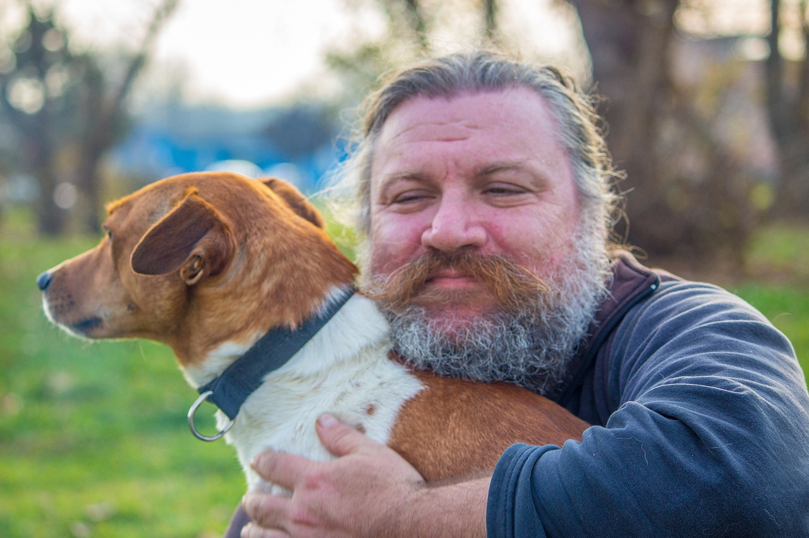

Scelta 1.2: Lo risparmia
Il lupo come ringraziamento gli da suo figlio, Cristian decide di portare il cucciolo con se per un sentiero misterioso dove trovano una casa e vivono per sempre felici e contenti.
FINE : 4 PUNTI
